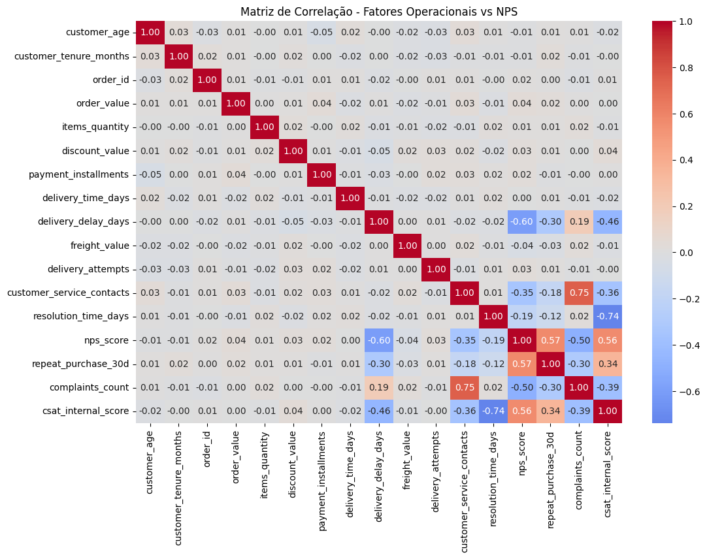
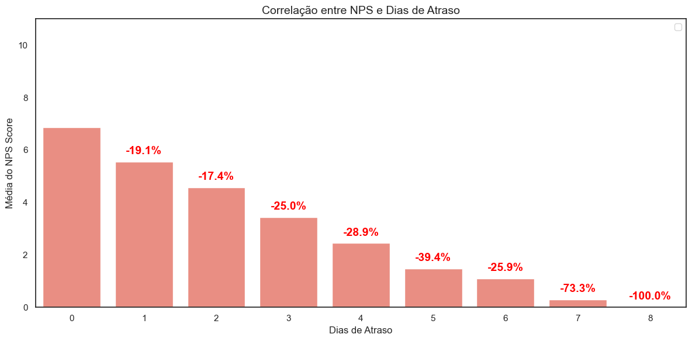
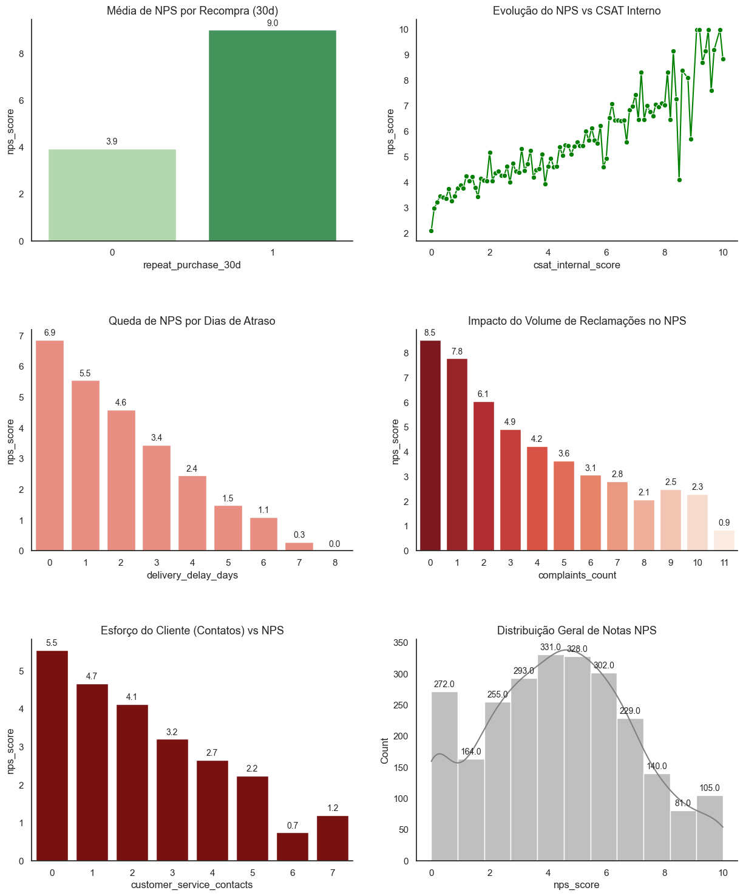

TECH CHALLENGE FASE 1
1. Entendimento do negócio: nessa primeira etapa, queremos exercitar o seu pensamento analítico, não código. Nos traga a resposta para as seguintes perguntas de negócio:
● Qual problema de negócio está sendo resolvido?
● Por que o NPS é importante para um e-commerce?
● Quais áreas poderiam se beneficiar desses insights? Exemplos: logística, atendimento, pricing, produto etc.
Como o NPS impacta:
● Recompra;
● Boca a boca;
● Market share em e-commerce.
● Quais indicadores de mercado poderiam complementar essa análise?
R: De acordo com o cenário apresentado, o problema a ser resolvido é entender o comportamento do cliente de forma preditiva; não deixar para entender no final da jornada o quê o cliente sente, mas sim antes e durante a ação de compra.
O NPS figura como um dos principais indicadores de qualidade de um produto justamente por ser prático de ser respondido (pensando no ponto de vista do cliente), ao mesmo tempo que é facilmente interpretado (pensando no ponto de vista do gestor), e através dele a empresa é capaz de tomar medidas no caminho que o cliente trilha até chegar a compra do produto de fato.
Sem sombra de dúvidas, as principais áreas que poderiam se beneficiar são a logística e atendimento; a logística se beneficiaria dos insights baseados no NPS no sentido de entender quais são as principais regiões que consomem aquele produto, e como reduzir ao máximo o lead time desde a compra até a entrega para o consumidor; já o atendimento se beneficiaria pois as ações que tangem ao cuidado e tratamento com o cliente seriam mais direcionadas ao que os clientes aprovam e reprovam na hora de se relacionar com a marca.
O NPS é um termômetro vital para o e-commerce porque impacta o faturamento de forma direta. Clientes promotores compram mais vezes (recompra) e trazem novos usuários de forma orgânica (boca a boca) a medida que indicam a marca para pessoas com padrões de consumo semelhantes, o que reduz o custo de marketing e fortalece a marca frente à concorrência, protegendo seu market share.
Para uma visão completa, não basta olhar apenas para a lealdade; é preciso cruzar esses dados com indicadores como o Churn Rate (para ver quem está saindo), o CAC (custo para atrair novos clientes) e o LTV (valor total que o cliente deixa na empresa). Essa combinação mostra se a satisfação está, de fato, se transformando em lucro sustentável.
2. Definição da Target: qual é o alvo desse problema de negócio? Nessa segunda etapa queremos uma avaliação de entendimento conceitual, não técnico.
● Qual variável representa a satisfação do cliente?
● Por que ela foi escolhida?
● Em que momento da jornada essa informação é coletada?
● Existe algum risco de usar essa variável de forma inadequada?
R: A variável alvo é justamente o nps_score.
Ela é coletada somente ao final da jornada de compra do consumidor.
O risco associado a essa varíavel pode ser resumido no conceito de data leakage, ou vazamento de dados, que no caso em questão é sobre só termos a variável alvo no final do processo, sendo que o objetivo é prever essa variável antes do encerramento da jornada. Dessa forma, o modelo teria uma performance artificial nos testes e falhará nos dados em produção, pois ele tentará prever o futuro usando dados do próprio futuro.
3. Análise Exploratória dos Dados (EDA): realize uma análise exploratória com foco em negócio, não só estatística. Responda:
● Quais fatores parecem mais críticos para a satisfação?
● O que mais gera detratores?
● Existe algum “ponto de ruptura” na experiência do cliente?
● Que tipo de cliente tende a ter NPS mais alto ou mais baixo?
R: Observando a matriz de correlação entre as variáveis da base de dados fornecida, podemos concluir que os principais fatores mais críticos para a satisfação do cliente são, ordenados de forma decrescente sobre o valor que tem mais força para impactar no nps_score :
● delivery_delay_days (quantidade de dias de atraso na entrega; corr=-0.60).
● complaints_count (número de reclamações registradas pelo cliente; corr=-0.50).
● customer_service_contacts (número de contatos do cliente com o atendimento; corr=-0.35).
O principal motivo que mais gera detratores é o tempo de atrasado da entrega (corr=-0.60), e isso releva o quão importante é o cumprimento dos prazos nesse cenário.
Além disso, a variável complaints_count tem forte relação direta com a variável customer_service_contacts (número de contatos do cliente com o atendimento), isso na prática sugere que o principal motivo pelos quais surgem os contatos geralmente está relacionada a dúvidas ou reclamações, e a quantidade de reclamações está associada ao nps de forma inversamente proporcional, ou seja, quanto maior o número de reclamações, menor é a nota de nps.
Para entender melhor o ponto de ruptura, foi destrinchado a variável que apresenta maior impacto negativo no nps: o tempo de atraso na entrega:

O gráfico em questão nos revela que, a medida que o tempo de atraso aumenta a média do NPS diminui, e essa queda é ainda mais acentuada entre os dias 4 e 5 de delay, onde a média da nota sofre uma redução de 39.4%. Ou seja, até o 4º dia o cliente ainda tem certa tolerância, porém, quando o atraso entra no 5º dia, o cliente já está insatisfeito com a empresa, e se torna mais difícil tentar reverter a situação.
Para verificar o tipo de cliente que tende a ter NPS mais alto ou mais baixo, foi gerado os seguintes gráficos com as principais variáveis relacionadas ao aumento e diminuição do target:

Principais considerações:
O perfil de cliente com NPS mais alto:
● Apresenta alta taxa de fidelização (recompra em 30 dias);
● Valoriza a resolução imediata no primeiro contato.
O perfil de cliente com NPS mais baixo:
● Possui baixa tolerância a atrasos logísticos (queda drástica a cada dia de atraso);
● Reage negativamente à necessidade de múltiplos contatos com o suporte (reincidência).